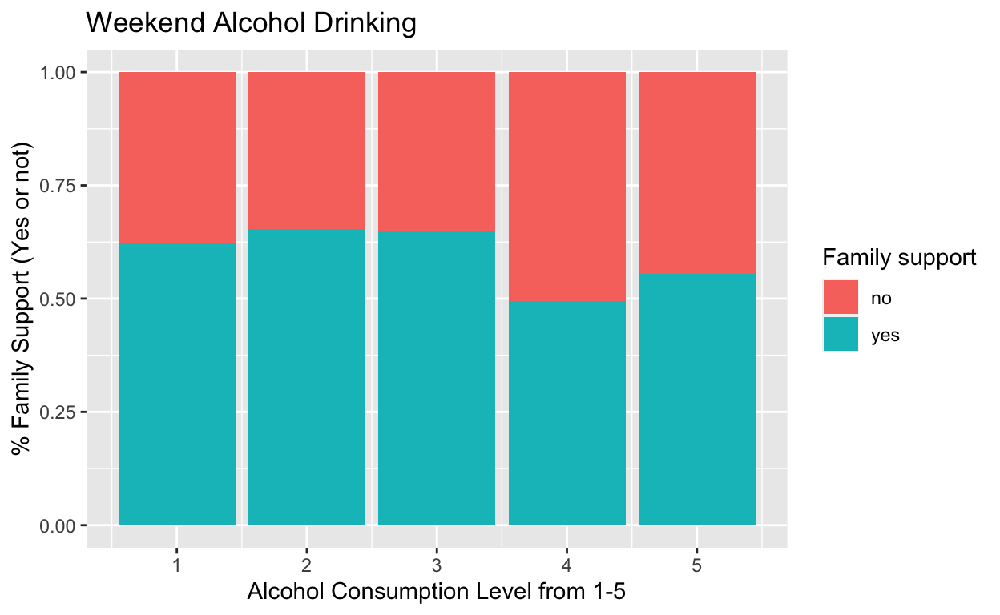
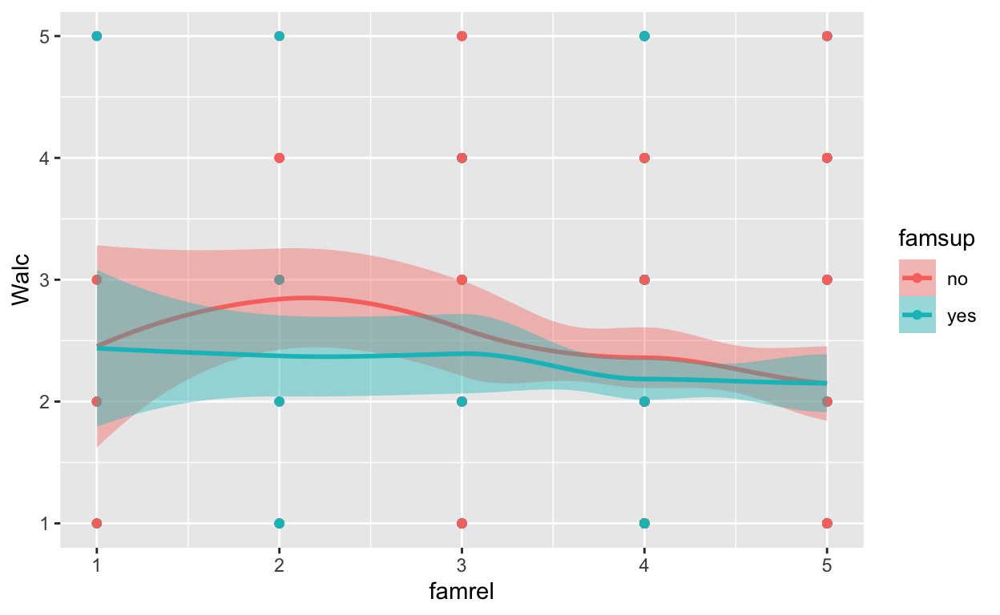
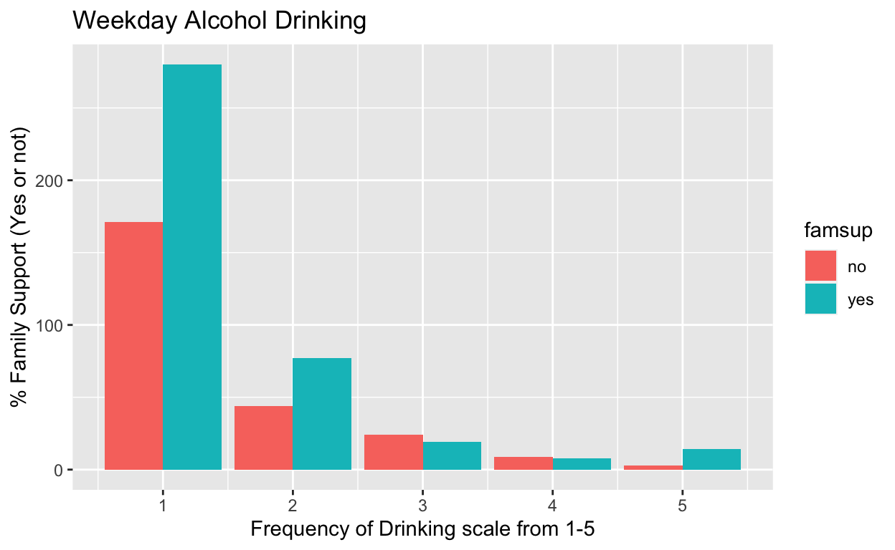

Alcohol on Teens
Link: https://www.kaggle.com/datasets/uciml/student-alcohol-consumption
Cortez,Paulo. (2014). Student Performance. UCI Machine Learning Repository. https://doi.org/10.24432/C5TG7T.
##Additional Information
This data approach student achievement in secondary education of two Portuguese schools. The data attributes include student grades, demographic, social and school related features) and it was collected by using school reports and questionnaires. Two datasets are provided regarding the performance in two distinct subjects: Mathematics (mat) and Portuguese language (por). In [Cortez and Silva, 2008], the two datasets were modeled under binary/five-level classification and regression tasks. Important note: the target attribute G3 has a strong correlation with attributes G2 and G1. This occurs because G3 is the final year grade (issued at the 3rd period), while G1 and G2 correspond to the 1st and 2nd period grades. It is more difficult to predict G3 without G2 and G1, but such prediction is much more useful (see paper source for more details).
1 school - student’s school (binary: ‘GP’ - Gabriel Pereira or ‘MS’ - Mousinho da Silveira)
2 sex - student’s sex (binary: ‘F’ - female or ‘M’ - male)
3 age - student’s age (numeric: from 15 to 22)
4 address - student’s home address type (binary: ‘U’ - urban or ‘R’ - rural)
5 famsize - family size (binary: ‘LE3’ - less or equal to 3 or ‘GT3’ - greater than 3)
6 Pstatus - parent’s cohabitation status (binary: ‘T’ - living together or ‘A’ - apart)
7 Medu - mother’s education (numeric: 0 - none, 1 - primary education (4th grade), 2 – 5th to 9th grade, 3 – secondary education or 4 – higher education)
8 Fedu - father’s education (numerice: 0 - none, 1 - primary education (4th grade), 2 – 5th to 9th grade, 3 – secondary education or 4 – higher education)
9 Mjob - mother’s job (nominal: ‘teacher’, ‘health’ care related, civil ‘services’ (e.g. administrative or police), ‘at_home’ or ‘other’)
10 Fjob - father’s job (nominal: ‘teacher’, ‘health’ care related, civil ‘services’ (e.g. administrative or police), ‘at_home’ or ‘other’)
11 reason - reason to choose this school (nominal: close to ‘home’, school ‘reputation’, ‘course’ preference or ‘other’)
12 guardian - student’s guardian (nominal: ‘mother’, ‘father’ or ‘other’)
13 traveltime - home to school travel time (numeric: 1 - <15 min., 2 - 15 to 30 min., 3 - 30 min. to 1 hour, or 4 - >1 hour)
14 studytime - weekly study time (numeric: 1 - <2 hours, 2 - 2 to 5 hours, 3 - 5 to 10 hours, or 4 - >10 hours)
15 failures - number of past class failures (numeric: n if 1<=n<3, else 4)
16 schoolsup - extra educational support (binary: yes or no)
17 famsup - family educational support (binary: yes or no)
18 paid - extra paid classes within the course subject (Math or Portuguese) (binary: yes or no)
19 activities - extra-curricular activities (binary: yes or no)
20 nursery - attended nursery school (binary: yes or no)
21 higher - wants to take higher education (binary: yes or no)
22 internet - Internet access at home (binary: yes or no)
23 romantic - with a romantic relationship (binary: yes or no)
24 famrel - quality of family relationships (numeric: from 1 - very bad to 5 - excellent)
25 freetime - free time after school (numeric: from 1 - very low to 5 - very high)
26 goout - going out with friends (numeric: from 1 - very low to 5 - very high)
27 Dalc - workday alcohol consumption (numeric: from 1 - very low to 5 - very high)
28 Walc - weekend alcohol consumption (numeric: from 1 - very low to 5 - very high)
29 health - current health status (numeric: from 1 - very bad to 5 - very good)
30 absences - number of school absences (numeric: from 0 to 93)
31 G1 - first period grade (numeric: from 0 to 20)
31 G2 - second period grade (numeric: from 0 to 20)
32 G3 - final grade (numeric: from 0 to 20, output target)
I am interested in finding out the trend between a student’s performance in school based on the amount of alcohol they consume. I also want to compare the alcohol consumption to whether it is also impacted by family support in education and the strength of the family relationships or not that causes the student to consume more or less alcohol.
So, in this csv file, I will compare the alcohol consumption among student age groups in Portugal. My question however is what is the cause for sudents to consume more alcohol than the average Portugal kid and is it caused by familial problems? To do this, the treatment will be whether a student has educational support or not (binary, 1 or 0).
I hypothesize that if a parent neglects family support in education as well as have a terrible relationship, therefore it will cause the student to carelessly drink because education is not valued
My explanatory variables is age of students based on age group as well as the consumption levels of alcohol per age group (age range 15-22 & alcohol consumption range 1-5, low to high). This will then allow us to see a pattern among groups of students with the treatment being whether a student has educational support or not. I will also want to incorporate the strength of the relationship with family to help reinforce the validity of the findings to test my hypothesis (range 1-5, poor to strong relationship).
My responding variable would be the effect it has on the students consumption of alcohol during the weekday as well as during the weekends. It will be measured by taking the mean of the consumption of alcohol of all students from a certain age group to find out the level of consumption. I will then find the ATE to confirm how much different the treated group is to the controlled group through a cross sectional design.
An observed pattern to help support my hypothesis would be a higher alcohol consumption in the group that receives less educational support whereas the group that receives educational support consumes less alcohol. However, a pattern that would disprove my hypothesis would be an inverse effect of educational support where the treatment group consumes more alcohol than the control group.
library(tidyverse)
library(ggplot2)
library(dplyr)
portugese <- read_csv("data/student-por.csv")
math <- read_csv("data/student-mat.csv")
portugese# A tibble: 649 × 33
school sex age address famsize Pstatus Medu Fedu Mjob Fjob
<chr> <chr> <dbl> <chr> <chr> <chr> <dbl> <dbl> <chr> <chr>
1 GP F 18 U GT3 A 4 4 at_ho… teac…
2 GP F 17 U GT3 T 1 1 at_ho… other
3 GP F 15 U LE3 T 1 1 at_ho… other
4 GP F 15 U GT3 T 4 2 health serv…
5 GP F 16 U GT3 T 3 3 other other
6 GP M 16 U LE3 T 4 3 servi… other
7 GP M 16 U LE3 T 2 2 other other
8 GP F 17 U GT3 A 4 4 other teac…
9 GP M 15 U LE3 A 3 2 servi… other
10 GP M 15 U GT3 T 3 4 other other
# ℹ 639 more rows
# ℹ 23 more variables: reason <chr>, guardian <chr>,
# traveltime <dbl>, studytime <dbl>, failures <dbl>,
# schoolsup <chr>, famsup <chr>, paid <chr>, activities <chr>,
# nursery <chr>, higher <chr>, internet <chr>, romantic <chr>,
# famrel <dbl>, freetime <dbl>, goout <dbl>, Dalc <dbl>,
# Walc <dbl>, health <dbl>, absences <dbl>, G1 <dbl>, G2 <dbl>, …math# A tibble: 395 × 33
school sex age address famsize Pstatus Medu Fedu Mjob Fjob
<chr> <chr> <dbl> <chr> <chr> <chr> <dbl> <dbl> <chr> <chr>
1 GP F 18 U GT3 A 4 4 at_ho… teac…
2 GP F 17 U GT3 T 1 1 at_ho… other
3 GP F 15 U LE3 T 1 1 at_ho… other
4 GP F 15 U GT3 T 4 2 health serv…
5 GP F 16 U GT3 T 3 3 other other
6 GP M 16 U LE3 T 4 3 servi… other
7 GP M 16 U LE3 T 2 2 other other
8 GP F 17 U GT3 A 4 4 other teac…
9 GP M 15 U LE3 A 3 2 servi… other
10 GP M 15 U GT3 T 3 4 other other
# ℹ 385 more rows
# ℹ 23 more variables: reason <chr>, guardian <chr>,
# traveltime <dbl>, studytime <dbl>, failures <dbl>,
# schoolsup <chr>, famsup <chr>, paid <chr>, activities <chr>,
# nursery <chr>, higher <chr>, internet <chr>, romantic <chr>,
# famrel <dbl>, freetime <dbl>, goout <dbl>, Dalc <dbl>,
# Walc <dbl>, health <dbl>, absences <dbl>, G1 <dbl>, G2 <dbl>, …avgalcohol <- portugese |>
group_by(famsup) |>
summarize(
famrel_mean = mean(famrel),
Dalc_mean = mean(Dalc),
Walc_mean = mean(Walc)
)
knitr::kable(avgalcohol, col.names = c("Family Relationship Strength",
"Family Support",
"Workday Alcohol Consumption",
"Weekend Alcohol Consumption"
))| Family Relationship Strength | Family Support | Workday Alcohol Consumption | Weekend Alcohol Consumption |
|---|---|---|---|
| no | 3.912351 | 1.521912 | 2.386454 |
| yes | 3.942211 | 1.489950 | 2.213568 |
We can start see a relationship from the above table displaying the average amount of alcohol consumption from a scale 1 - very low to 5 - very high in two categories: “yes” for family support and “no” for no family support. We can see that there is a slightly higher consumption of alcohol for both “workday” and “weekend” drinking when family is supportive of child’s. For Workday alcohol consumption, there is a 0.03197 increase in consumption if a family is not supportive in education compared to supportive family and for Weekend alcohol consumption, there is a 0.173 increase in consumption. Clearly there is a relationship between having a supportive family and not having a supportive family, allowing one to see that having no support may lead to an increase in alcohol consumption. Although we cannot assume this is causal.
famsupport <- portugese |>
filter(famsup == "yes") |>
summarize(mean(Dalc),
mean(Walc))
nofamsupport <- portugese |>
filter(famsup == "no") |>
summarize(mean(Dalc),
mean(Walc))
simpcomp <- famsupport - nofamsupport
knitr::kable(simpcomp, col.names = c("SimpComp of Workday Drinking", "SimpComp of Weekend Drinking"))| SimpComp of Workday Drinking | SimpComp of Weekend Drinking |
|---|---|
| -0.0319626 | -0.1728863 |
For this part, I did a quick Simple Comparison of the difference between the mean of the treatment minus the control. I already stated the difference up above but to further demonstrate the difference in groups, this is the concrete evidence.Again, a relationship can be seen that having no family support may lead to an individual to consume more alcohol.
##ggplot
boxplotweekend <- portugese |>
ggplot(mapping = aes(x = famsup, y = Walc)) +
geom_boxplot()
boxplotweekend
boxplotweekend2 <- portugese |>
ggplot(mapping = aes(x = famsup, y = Dalc)) +
geom_boxplot()
boxplotweekend2pointplot <- portugese |>
ggplot(mapping = aes(x = famrel, y = Walc, color = famsup, fill = famsup)) +
geom_point() +
geom_smooth()
pointplot
pointplot <- portugese |>
group_by(Walc, famsup) |>
summarize(count = n()) |>
mutate(Proportion = count / sum(count)) |>
ggplot(aes(x = Walc, y = Proportion, fill = famsup)) +
geom_bar(stat = "identity") +
labs(
title = "Weekday Alcohol Drinking",
x = "Frequency of Drinking scale from 1-5",
y = "% Family Support (Yes or not)"
)
pointplotAs we can see from the graph, this is the graph for weekend alcohol drinking. The independent variable is the frequency of people drinking on a scale from 1-5 and the dependent variable is the proportion of family members that either support or don’t support the student’s education (binary). We can see that weekend drinking with a score of 2 or 3 yields the highest support from family while the rest is quite similar in proportion of support. The proportion of those who consume the most at a scale of 5 is quite even.
pointplot2 <- portugese |>
group_by(Dalc, famsup) |>
summarize(count = n()) |>
mutate(Proportion = count / sum(count)) |>
ggplot(aes(x = Dalc, y = Proportion, fill = famsup)) +
geom_bar(stat = "identity") +
labs(
title = "Weekday Alcohol Drinking",
x = "Frequency of Drinking scale from 1-5",
y = "% Family Support (Yes or not)"
)
pointplot2
As we can see from the graph, this is the graph for weekday alcohol drinking. The independent variable is the frequency of people drinking on a scale from 1-5 and the dependent variable is the proportion of family members that either support or don’t support the student’s education (binary). We can see that for people who consume the most, the proportion of people who have more family suppport is higher than the proportion of those who don’t family support which is quite odd.
regression1 <- lm(Dalc ~ famrel, data = portugese)
regression1
Call:
lm(formula = Dalc ~ famrel, data = portugese)
Coefficients:
(Intercept) famrel
1.79050 -0.07332 regression2 <- lm(Walc ~ famrel, data = portugese)
regression2
Call:
lm(formula = Walc ~ famrel, data = portugese)
Coefficients:
(Intercept) famrel
2.7744 -0.1257